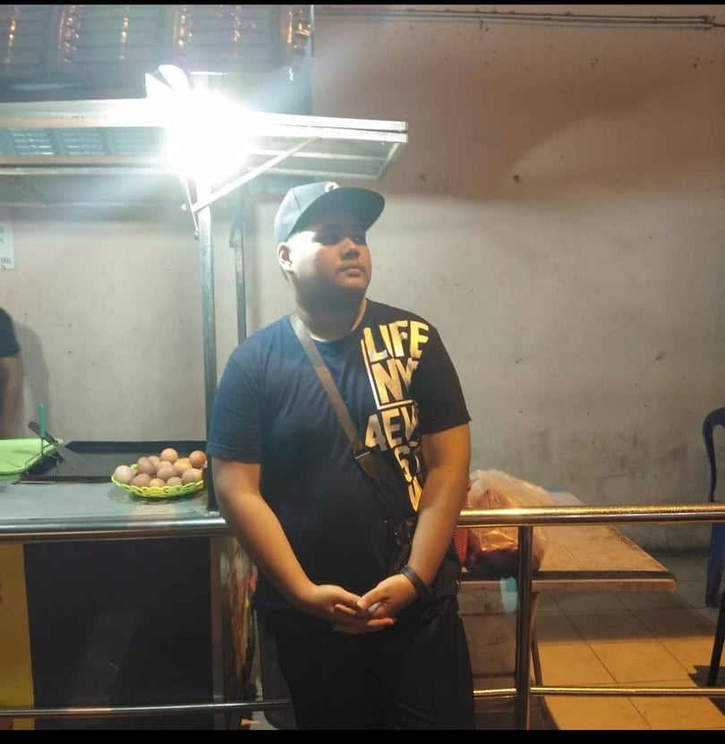

After SPM, i joined my teacher part time business which is sell burger.
Of course at that time, while waiting for the exam results to come out, when there was nothing to do, I decided to work at my teacher’s burger stall.
There are many things that can be done, such as work experience in addition to earning extra money.
First time in my life, i'm came to watch my beloved Football Club PERAK FC versus KEDAH FA in FINAL FA CUP 2019 at STADIUM NASIONAL BUKIT JALIL.#FULLHOUSE!
This moment will be always in my memories because, when the whole world is experiencing the Covid-19 pandemic, of course the normal life to go to the stadium no longer can be felt. ____________________________________________________________________________________________________________________________________________________________________________________________________ By: Azfar